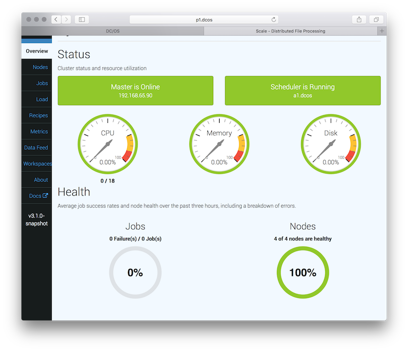
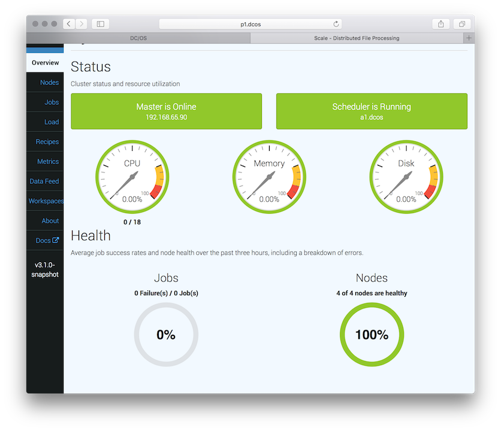

This document covers the steps required and running with Scale quickly using DC/OS as the execution framework. If you already have a DC/OS cluster, you can go straight to step 2.
First, you need to setup a DC/OS cluster. This can be accomplished locally, on-premise or in a cloud deployment. We recommend using a cloud deployment as these will be the quickest and most flexible for scaling up to test experimental workloads.
Complete installation instructions for your chosen deployment can be found here.
Install pre-requisite packages. Scale requires Elasticsearch to be available, with Marathon-LB being optional for external Scale API exposure. Elasticsearch is not required to be running internal to the DC/OS cluster, but this is the simplest way to get up and running.
Browse to the DC/OS Admin UI. From the left navigation, select Universe. Search for Elasticsearch, click Install and Install Package to install with defaults. Search for and install Marathon-LB, as well, if public Scale API exposure is desired. Once these installs have been launched, use the left navigation to select Services. Wait for Elasticsearch to deploy and scale to 4 running tasks before proceeding to the next step.


Install the Scale package. The Scale package will install all required components, save for external dependency on Elasticsearch. This default is not recommended for a production deployment, but will get you up and running quickly to experiment with the Scale system. The primary recommendation is to use an externally managed Postgres database for Scale state persistence. This can be accomplished by specifying the database connection information during installation. A user name with ownership to an existing database containing the PostGIS extension is the only requirement.
Browse to the Dc/OS Admin UI. From the left navigation, select Universe. Search for Scale, click Install and Install Package to install with defaults. If wishing to customize the virtual host for public exposure, Elasticsearch being used or the database host, select the Advanced Installation link instead of Install Package.
It will take a few minutes for the deployment to finish. Check the Services pane of the DC/OS Admin
UI for a status display. When complete, you'll see scale, scale-logstash and
scale-webserver tasks in healthy states.
NOTE: the following dcos-admin string must be replaced with the address of your
DC/OS Admin UI.
 

Create example job and process sample data. The Scale system is designed to allow processing on any type of data stored as discrete objects - this can be either files from network volumes or object storage, such as AWS S3. Scale is primarily focused on processing of data in a monitoring mode as it arrives. Reference Scale architecture and algorithm integration documentation for an in-depth overview of these topics.